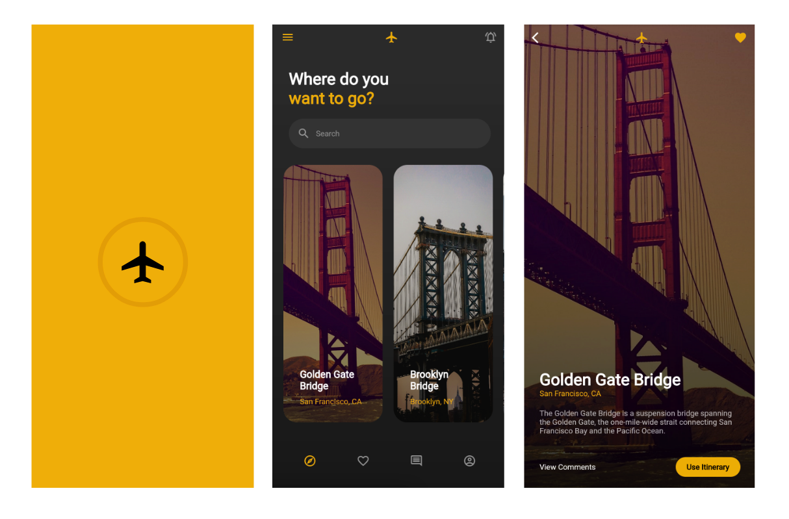
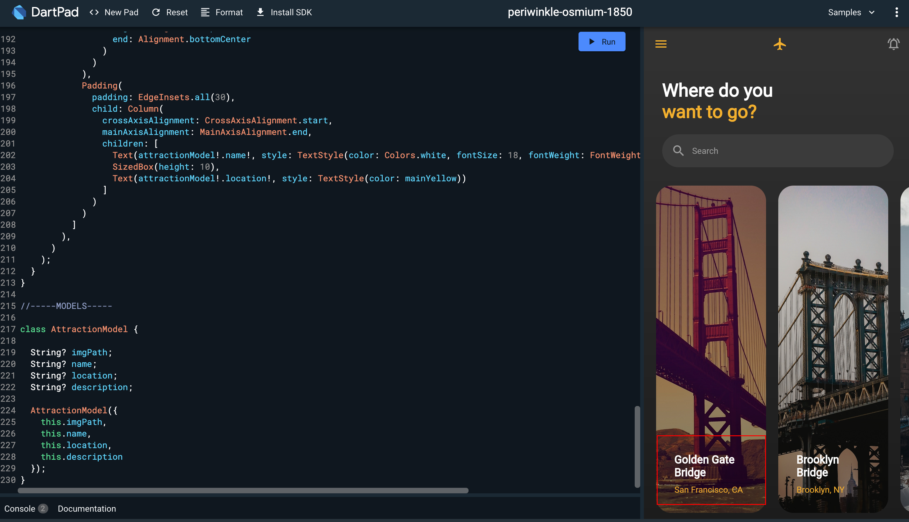
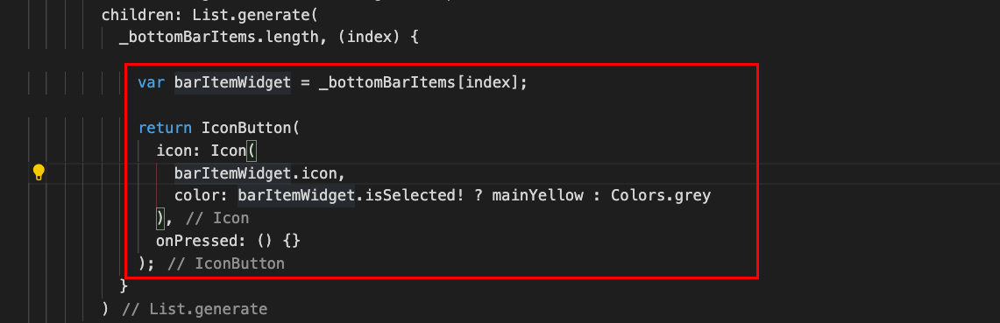

What You'll Build in this Workshop:
- A simple 3-page Flutter Application / Bridges of the World (Landing Page / Bonus labs: Splash Screen and Details Page)
- Create Flutter User interfaces with ease
- Common Flutter Layout strategies using just core widgets
- Creating custom Flutter widgets and achieve widget composition
- Creating Dart models to mock up app data
- Import network images
- Using Material Icon fonts

- A computer with a browser
- An internet connection
DartPad will be our Flutter development editor, so let's set it up for that.
First, go to a browser and launch dartpad.dev. Your browser should look as follows:

Setting up DartPad for Flutter Development
By default, DartPad is set up for Dart development. For Flutter development, do the following steps:
- From the top menu, select New Pad.

- If prompted to discard changes of the current pad, click OK.

- From the New Pad dialog, select Flutter. Click Create.

You should be all set! Now you're ready to start coding in Flutter right from your browser. If you hit the Run button, you will see the generated output on the right panel.

Are you ready? Let's go to the next step!
For the initial page in this application, we'll be building the Landing Page Widget.
This is what we'll be accomplishing in this codelab:
Landing Screen and its widget composition
The following illustration shows a schematic view of the widget composition we'll accomplish while building the layout for our Landing Page widget:
Start Coding the App
Let's start coding this application from scratch. Remove all code from the editor and leave just the following code:
import 'package:flutter/material.dart';
void main() {
// TODO: more code here later
}
We are importing the Material Library Flutter package and like every Flutter app, the main entrypoint is the main method. Inside this method is where things kick off. We'll get back to this point in a minute.
Inside the main method, add the following code:
// add this code inside your void main():
runApp(
MaterialApp(
home: LandingPage(),
debugShowCheckedModeBanner: false
)
);
Your code should look like this:
The runApp method is part of the Flutter framework and is in charge of mounting the root widget on the widget tree. We create the first widget (MaterialApp) which represents the application's root widget.
We disable the debugging sash by setting the debugShowCheckedModeBanner to false, and set the home property of the MaterialApp widget to be our LandingPage widget, which we'll create in a moment.
Let's create the LandingPage Widget.
Right under the main method, create a StatelessWidget called LandingPage. We create it as Stateless since we won't be maintaing state. More info on StatelessWidgets here.
Since every widget has a build method, add one, and return a simple Scaffold widget with a Text widget as a child, with the content "Landing Page".
If you try it out in DartPad, it should look like this:
Under the import statement, right above the main method, add the following lines:
final Color mainYellow = Color(0xFFFFB02F);
final Color primaryGray = Color(0xFF313131);
final Color secondaryGray = Color(0xFF1C1C1C);
final Color lightGray = Color(0xFF3B3B3B);
We want to use these colors as our application's color palette (mainColor, primaryGray, secondaryGray) throughout our application and don't want to repeat ourselves, hence making these values as global properties.
Back on the LandingPage widget, let's replace the body's Text widget by a Container widget, as such:
Now, let's add a background color to this Container widget, but in the form of a gradient. Use the decoration property available in a Container widget, and provide the following values:
- For the decoration, add a BoxDecoration object
- Inside, add a gradient property and provide a LinearGradient object
- Inside the LinearGradient object, set the following properties:
- colors: set it as an array with two color values, primaryGray and secondaryGray; the two values in which the gradient will consist of
- begin: the point on which the gradient will begin - set it as Alignment.topCenter
- end: the point on which the gradient will end - set it as Alignment.bottomCenter
At the end, your code should look as follows:
If you run it on DartPad at this point, you should be seeing a gradient color running fro top to bottom:
With that in place, let's proceed with the widgets that make up this page.
Inside of the Scaffold, let's populate both the appBar and drawer property by assigning to them an AppBar widget and a Drawer widget respectively. An AppBar widget - just like the name implies - is the application's topmost bar, where we can place a title, navigation icons, menu icons, etc. The Drawer widget is a panel that slides out horizontally from the edge of a Scaffold widget, used for menus, navigation links, etc.
Your code should look as follows:
The way it looks in DartPad now (if you hit Run), is as shown below:
If you expand the Drawer as well, it looks pretty bare now, and we want to differentiate our app from others, so we'll further customize each one of this components, starting from the AppBar widget. Let's proceed!
Creating the App Bar
In this step we'll customize the AppBar widget to match our design. We'll make the one from the left look like the one on the right, where we remove the shadow, make it transparent, the menu icon adopts our app's color palette as well as showing an icon as title.
Customizing the AppBar
Let's proceed by setting the following properties of the AppBar widget:
- Set the elevation property to 0 - this removes the shadow from the AppBar
- Set its backgroundColor property to primaryGray to remove the default blue
- Set its iconTheme property to IconThemeData(color: mainYellow) to set it to our mainYellow property already defined above.
Copy the following lines to save some typing:
// add this inside the AppBar:
elevation: 0,
backgroundColor: primaryGray,
iconTheme: IconThemeData(color: mainYellow)
Your code should look like this afterwards:
Adding Title Icons and Placeholder Items
Let's work on adding an icon as title.
Proceed to set the AppBar's title property by adding an Icon widget, wrapped inside a Center widget so it gets centered at the top, as such:
Running it now, it should look like this in DartPad:
For the title to truly look centered, make use of an additional property of the AppBar widget called actions, which is used for adding additional options on the right side of the AppBar, and we'll add another icon, this time an IconButton.
We'll create a Container with 10px right margin, and inside, an IconButton with color grey. We'll add it to the actions array property of the AppBar. This will adjust the alignment on the AppBar and compensate for the added space by the hamburger menu on the left.
Your code should look like this:
If you hit Run on DartPad to test the app so far, you should see the AppBar already customized. It shows the logo, the hamburger menu with our theme color, the title logo looks centered, as well as the IconButton added on the right via the actions property of the AppBar widget:
Let's proceed to customizing the Drawer widget a bit.
We'll customize the Drawer widget a little bit. A Drawer is pretty much like any other single-child widget, in which you can add anything inside it and it will render as you please.
The bottom illustration is what will look like once we customize the Drawer widget and its behavior:
The following illustration is a quick schematic of what we'll be accomplishing for the Drawer widget:
It will have a solid color background with the app's logo at the bottom left corner.
Customizing the Drawer
First, let's start by adding a Container widget as the child of the Drawer widget, and set its padding to 20px all around using EdgeInsets.all(20). Set its background color to mainYellow and align its contents to the bottom left corner by setting its alignment property to Alignment.bottomLeft:
Now, add an Icon widget as the child of the newly added Container widget, with our specific icon (Icons.airplanemode_on), color of black and size 80. Your code should look like this:
And with that, you should be all set with customizing the Drawer widget. You can feel free to add further elements and links to your own Drawer widgets, since it provides a lot of flexibility for customization. Let's keep moving!
Now let's continue laying down the items that make up the Landing Page Widget's body, so we'll start with the Header widget.
Implementing the Header Widget
The following is a schematic view of what we'll be tackling in the following section:
Let's proceed!
Back in the LandingPage widget, add a Column widget as the child of the body's Container widget. Set its crossAxisAlignment property to CrossAxisAlignment.stretch so it stretches horizontally.
Your code should look as follows:
Inside the newly added Column widget's children property, add the placeholder widget called HeaderWidget.
Create the HeaderWidget widget class
Under the LandingPage class, add a comment for the widgets section:
class LandingPage extends StatelessWidget { ... }
//-----WIDGETS-----
Under this comment, create the class corresponding to the AppHeader widget. Add the following elements as you create the initial scaffolding for it:
- Create it as a StatelessWidget
- Override its build method as usual
- In its build method, return a Container widget
- For testing purposes, add a Text widget as a child of the Container widget with a TextStyle containing the color property as Colors.white. Add the text header in it.
Here's the code if you want to save some typing:
class HeaderWidget extends StatelessWidget {
@override
Widget build(BuildContext context) {
return Text('header', style: TextStyle(color: Colors.white));
}
}
Your code should look as follows:
If you hit Run on DartPad now, you should be able to see the text "header" in white, showing right in the slot where the header is supposed to show, as in the screenshot below:
Let's continue elaborating on this widget.
This is what we'll focus on - building the following piece of the structure:
Replace the Container widget with the Text widget by a Column widget. As you see above, we want to lay out our items in a vertical fashion, so we need a column for that. Set its crossAxisAlignment to CrossAxisAlignment.start to align its children to the left:
Let's add children.
Add the Header Labels
We'll add the labels shown in the design, also laid out one of top of each other. Since we want to wrap them as a single unit with some breathing around them, let's add them inside yet another Column widget, with a Padding widget wrapping them.
Add it as follows:
- Padding widget, with padding top, left and right - 30px on each side
- Column widget, with left alignment (crossAxisAlignment.start)
- Two Text widgets:
- Top Text widget with color white, 30px font size and bold
- Bottom Text widget with color mainYellow, 30px font size and bold
Here's the code if you want to save some keystrokes:
// add it as the first children of the Column widget
Padding(
padding: EdgeInsets.only(top: 30, left: 30, right: 30),
child: Column(
crossAxisAlignment: CrossAxisAlignment.start,
children: [
Text('Where do you', style: TextStyle(color: Colors.white, fontSize: 30, fontWeight: FontWeight.bold)),
Text('want to go?', style: TextStyle(color: mainYellow, fontSize: 30, fontWeight: FontWeight.bold))
]
),
),
Your code should look like this:
Running it on DartPad, you should be seeing the following:
Implementing the Placeholder Search Bar
This is the piece of the structure that we'll be tackling now:
Start by adding a second Padding widget to the HeaderWidget's main Column widget, right below the existing one. Add 30px of padding, left and right only:
As the Padding widget's child, add a Container widget with the following specs:
- padding of 15px all around (EdgeInsets.all(15))
- decoration with BoxDecoration:
- borderRadius of 50px (BorderRadius.circular(50))
- background color of lightGray
- margin of 20px, top and bottom only
We want to add that rounded-corner look to that widget structure to make it look like a field, so that's what we're achieving with this code. You can grab the code for the Container to help you with the typing:
// add this as the child of the Padding widget
Container(
padding: EdgeInsets.all(15),
decoration: BoxDecoration(
borderRadius: BorderRadius.circular(50),
color: lightGray
),
margin: EdgeInsets.only(top: 20, bottom: 20)
)
Your Padding widget with the child Container widget should look like this:

Let's add now the items inside this Container. Let's add an Icon and a Text widget with some spacing in between, in a horizontal layout, therefore we'll use a Row widget for this purpose.
Add a Row widget, and as its children, add an Icon widget (Icons.search), with color grey. Next to it simulate some spacing by adding a SizedBox widget, 10px width. Last, add a Text widget with color grey.
Your code should look as follows:
If you hit Run in DartPad at this point, you should see the following output:

Things are taking a very nice shape! Let's keep rolling!
We'll work now with the middle portion of the layout, which consists of a list of card widgets with scrolling capabilities, taking up most of the body of this page. We'll call it AttractionListView and we'll create it as a custom widget as well. Each card in turn will also be a custom widget (called AttractionCard) which we'll dig into further down.
The following structure is what we'll be tackling:
Let's go back to our LandingPage widget, and inside the body's Column, under the HeaderWidget widget, add a new placeholder widget, and call it AttractionListView. Same drill - we'll develop it further in a bit:
Now let's create the boilerplate class corresponding to this widget, with some sample text to show. Grab the code below and add it under the HeaderWidget class, under the WIDGETS section:
class AttractionListView extends StatelessWidget {
@override
Widget build(BuildContext context) {
return Text('attraction list view', style: TextStyle(color: Colors.white));
}
}
Your code should look as follows:
And if you hit Run in DartPad, make sure you see the text below as well (just to make sure things are hooked up):
Let's further elaborate on this structure, and focus for now on on the AttractionListView custom widget.
Adding Models that feed data to the AttractionListView
Before we start, you might be wondering where to get the images and the information about the famous attraction of the world, in our case - bridges. For that, we'll have to mock it up, and the data to be in a structured way. We'll create Dart models that will hold this mocked data.
Creating an AttractionModel class
We need to hold the data corresponding to a single attraction. For this, we will create a simple class called AttractionModel, which will hold the following information:
- A imgPath property, type String, to hold the URL path to the picture of the mount
- A name property, type String, which will hold the name of the mount
- A description property, type String, which will hold the description of the mount
- A location property, also type String, which will have the name of the location of the mount.
Write a class called AttractionModel at the end of this file, adding the properties above. Add a constructor for it and initialize the properties with some default empty values.
Here's the code for it so you can save some typing:
class AttractionModel {
String? imgPath;
String? name;
String? location;
String? description;
AttractionModel({
this.imgPath,
this.name,
this.location,
this.description
});
}
Creating Mocked Data from the Created Model
Now that we have a way to structure the data we want to show (by creating a model class that will hold the values), we'll mock some data and store it in a collection so we can later feed it to our ListView widget.
Create a list of AttractionModel items, called attractions; make it final so we can assign default values right from the start. Populate it with the following values (you can add your own data, but for the sake of this workshop, you can grab the values provided below). Add this collection at the top of the file, in the GLOBAL VARIABLES SECTION (if you created a section for them), otherwise just add them at the top of the main method:
final List<AttractionModel> attractions = [
AttractionModel(
imgPath: 'https://images.pexels.com/photos/260590/pexels-photo-260590.jpeg?auto=compress&cs=tinysrgb&dpr=3&h=750&w=1260',
name: 'Golden Gate Bridge',
location: 'San Francisco, CA',
description: 'The Golden Gate Bridge is a suspension bridge spanning the Golden Gate, the one-mile-wide strait connecting San Francisco Bay and the Pacific Ocean.'
),
AttractionModel(
imgPath: 'https://images.pexels.com/photos/5627275/pexels-photo-5627275.jpeg?auto=compress&cs=tinysrgb&dpr=3&h=750&w=1260',
name: 'Brooklyn Bridge',
location: 'Brooklyn, NY',
description: 'The Golden Gate Bridge is a suspension bridge spanning the Golden Gate, the one-mile-wide strait connecting San Francisco Bay and the Pacific Ocean.'
),
AttractionModel(
imgPath: 'https://images.pexels.com/photos/5241381/pexels-photo-5241381.jpeg?auto=compress&cs=tinysrgb&dpr=3&h=750&w=1260',
name: 'London Bridge',
location: 'London, UK',
description: 'The Golden Gate Bridge is a suspension bridge spanning the Golden Gate, the one-mile-wide strait connecting San Francisco Bay and the Pacific Ocean.'
),
AttractionModel(
imgPath: 'https://images.pexels.com/photos/1680247/pexels-photo-1680247.jpeg?auto=compress&cs=tinysrgb&dpr=2&h=650&w=940',
name: 'Harbour Bridge',
location: 'Sydney, AU',
description: 'The Golden Gate Bridge is a suspension bridge spanning the Golden Gate, the one-mile-wide strait connecting San Francisco Bay and the Pacific Ocean.'
)
];
Now let's work on the structure of the AttractionListView
Replace the Text widget being returned from the AttractionListView widget by an Expanded widget. We'll pretty much wrap everything inside this Expanded widget, which tells its parent (the Column widget that contains this custom widget) that the widget inside it will occupy most of the column's space; the rest of the widgets will only get the space allocated to them based on their dimensions.
The Expanded widget must have a child, so let's proceed by adding the next item in the structure: a ListView widget.
Let's add as the immediate child of the Expanded widget a ListView widget, which provides a scrollable list of widgets arranged linearly.
There are many ways in which you can instantiate a ListView widget, but we'll use a convenient constructore called builder, which creates a scrollable, linear array of widgets that are created on demand.
Our ListView.builder constructor takes several parameters, but we'll only use a few of them:
- scrollDirection: set the direction in which we want users to scroll through items. Default is vertical, but we want horizontal scrolling, hence setting its value to Axis.horizontal.
- itemCount: the number of items that the ListView will render for us. Notice we're using the length of the attractions collection we created previously.
- itemBuilder: callback that gets triggered for as many items you set in itemCount (one for every item in the attractions collection); returns widgets created on demand as they become visible, for efficiency.
- padding: internal padding added to the ListView; well do only 10px of left padding just to add some symmetry.
Grab the code below to save some keystrokes:
// add the following code as the child of the Expanded widget:
child: ListView.builder(
padding: EdgeInsets.only(left: 10),
itemCount: attractions.length,
scrollDirection: Axis.horizontal,
itemBuilder: (context, index) {
return Container();
}
)
Your code should look as follows:
Now, for as many items that are visible in the ListView widget's viewport, it invokes the itemBuilder callback, passing the context and the index corresponding to the ListView item in question. We'll use those parameters to build each widget based on the data provided in the attractions collection.
Create the AttractionCard widget
Inside of the ListView.builder callback, is where we'll generate each card, per attraction available in our collection. Start by fetching the attraction model in the current iteration by using the index value provided in the callback. Hold the value in a variable called currentAttraction. Add it right before the return statement:
With that in place, now let's focus on the widget that will consume this attraction model. We'll create a custom widget class called AttractionCard. Grab the code below and paste it under the WIDGETS section, or anywhere at the end of the file works as well:
class AttractionCard extends StatelessWidget {
@override
Widget build(BuildContext context) {
return Container();
}
}
Now let's focus only on the AttractionCard widget moving forward.
To this class, add the property that we'll inject into it in order to use it while rendering this widget. Make the property type AttractionModel, called **attractionModel. Create a corresponding constructor for it as well, since we'll be feeding it via the constructor; add it on top of the build method.
Your code should look like this:
This is the structure we'll be working on for this widget:
Let's start by adding a fixed width of 180px to the existing Container inside the AttractionCard widget, as well as margin all around of 10px:
Now, add a child to the Container widget - a Stack widget. We use a Stack mostly to add widgets one on top of each other, in a stack fashion. We'll be adding the icon and the circular progress indicator on top of each other but with different alignments.
Proceed to add children to the Stack widget - in our case, the first widget will be the background image. We'll add a Container widget, which will serve as the host of the background image (a NetworkImage), pulling the value from the attractionModel model injected.
Grab the code below and copy / paste it - if you feel lazy not to type it ;) :
// add this as the first child in the Stack list of children:
Container(
decoration: BoxDecoration(
image: DecorationImage(
image: NetworkImage(attractionModel!.imgPath!),
fit: BoxFit.cover
)
)
)
Notice the usage of the BoxDecoration's image property, where we set it as a NetworkImage, and using the attractionModel's imgPath property to pull the image information stored in it. We use BoxFit.cover to make it fill the space occupied by the Container without distorting the image's aspect ratio.
Your code should look like this afterwards:
Add the second child to the Stack widget - another Container widget, this one representing the gradient effect, achieved by using the same decoration property used for the background image, but using the gradient property.
We're adding a bit of gradient in this Stack so when we place the text content, we can read it better and provide better contrast. We want the gradient to start at the top center and stops at the bottom center of the Stack with a smooth transition from transparent to opaque black.
Grab the code below to save some typing:
// add this as the second child of the Stack:
Container(
decoration: BoxDecoration(
gradient: LinearGradient(
colors: [
Colors.transparent,
Colors.black.withOpacity(0.5)
],
begin: Alignment.topCenter,
end: Alignment.bottomCenter
)
)
)
Let's add now the content that goes on top of everything in this Stack widget - the labels. We'll lay them out vertically, and for that we'll use a Column. We want to align its items at the bottom vertically (MainAxisAlignment.end), and at the left horizontally (CrossAxisAlignment.start).
As the Column's children, we'll add two Text widgets, one displaying the name of the attraction (attractionModel.name), color white, 18px font size, and bold; the other displaying the location (attractionModel.location) with color mainYellow, divided by some space in between (simulated using a SizedBox with 10px height).
Code provided below:
// add this as the third child in the Stack
Column(
crossAxisAlignment: CrossAxisAlignment.start,
mainAxisAlignment: MainAxisAlignment.end,
children: [
Text(attractionModel!.name!, style: TextStyle(color: Colors.white, fontSize: 18, fontWeight: FontWeight.bold)),
SizedBox(height: 10),
Text(attractionModel!.location!, style: TextStyle(color: mainYellow))
]
)
Let's test what we've build so far, and we'll tweak it more in a bit.
Back to the AttractionListView widget, replace the returned empty Container widget in the ListView.builder's itemBuilder callback, by our newly created AttractionCard widget, newing up an instance and passing the currentAttraction via its constructor, as follows:
If you run it in DartPad, you should see the following outcome:
We need to deal with the roundness of each of the cards' corners, as well as applying some padding to the Column widget that contains the Text widgets. Let's proceed.
Back to the AttractionCard widget, first wrap the whole Stack widget inside a ClipRRect widget. This is the responsible of adding the rounded corners around the Stack and all its children. Apply a borderRadius of 25px to the ClipRRect, as follows:
Running it again on DartPad, now we see how the whole Stack gets clipped:
For the spacing on the text, simply wrap the Column widget in the Stack inside a Padding widget. Add padding inside all around of 30px, as shown below:

Running it one more time on DartPad, now we see the proper spacing being applied on the text:

Looking good so far! Let's work on the last widget on this page - the BottomBar widget!
We're ready to tackle the layout of the last widget of the LandingPage widget, which we're calling the BottomBarWidget, which is nothing more than a custom bar that can be used as tab navigation for this page, and switch between different views based on what the user has clicked. We will only do the layout and not perform any navigation, for the sake of this tutorial that deals with layout building.
BottomBarWidget
For this widget, we'll be maintaining state within itself, hence this widget will inherit from StatefulWidget. Every time a user clicks on one of the bottom bar options, the widget's state changes - the state of which one is selected - which triggers a rebuild, and renders accordingly. That's in essence how StatefulWidgets work. More on StatefulWidgets here.
Let's show the schematic view of this widget, so we'll have a concrete idea of its composition and how we'll build it:
Creating the BottomBarWidget widget class / Adding Placeholder
As in the previous occasions, we first add a placeholder widget instance, then we create it. We'll do the same here.
Back in the LandingPage widget, inside the Column inject, right underneath the AttractionListView widget we created earlier, add our upcoming widget BottomBarWidget.
Now, go to the WIDGETS section (if you created one, otherwise let's work right under the AttractionCard widget we created earlier). Creating a StatefulWidget involves a two-step process.
A widget that maintains its state and extending StatefulWidget is composed of two classes, the widget class that extends StatefulWidget and the State class.
First step is creating a new class that extends StatefulWidget (in our case, a class called BottomBarWidget).
In this class, you will override a special method called createState, which instantiates the companion State class, which by convention, it's usually named <NAME_OF_WIDGET>State (i.e. BottomBarWidgetState - we haven't created it yet, but we will in a minute).
Second step is creating the class that will hold the state for this widget, which we'll call AppBottomBarState - this is the one that contains the build method, and every time the state changes, the build method gets triggered, rebuilding the widget, keeping it in sync with the data. This class extends State and must be of type of its corresponding StatefulWidget (i.e. State<AppBottomBar>) so as to establish the relationship between the widget and its state.
As in the past, override the build method, add some dummy Container with a Text widget, just for testing. Add the text "Bottom Bar" to the Text widget.
Right off the bat, the State class looks pretty much like a StatefulWidget class, with an overridden build method - we'll see down below what makes it so special.
Your class(es) should look as follows (grab the code to save typing):
class BottomBarWidget extends StatefulWidget {
@override
State<BottomBarWidget> createState() => BottomBarWidgetState();
}
class BottomBarWidgetState extends State<BottomBarWidget> {
@override
Widget build(BuildContext context) {
return Container(
child: Text('Bottom Bar', style: TextStyle(color: Colors.white))
);
}
}
If you hit the Run button on DartPad at this point in time, it should yield the following output in the preview panel on the right (see the text "Bottom Bar" at the bottom), which proves that things are hooked up and the widget is showing:
Let's dig in!
Creating a Model for the Bottom Bar Item Data
Before we proceed further, we want to create a model that holds the data corresponding to each one of the bottom bar items (i.e. we want to show an icon, a label, a flag whether it is selected or not, etc.). This model will also hold information about the state we're keeping track of - which of the selected bottom bar items is selected.
Let's create a model class called BottomBarModel, which will be just a regular class that will hold the following properties:
- icon: type IconData, represents the icon to show for each item in the bottom bar
- isSelected: type bool, holds the value of whether this is the currently selected item in the bottom bar
Your BottomBarModel model class should look as follows (grab the code as well and copy / paste it):
class BottomBarModel {
IconData? icon;
bool? isSelected;
BottomBarModel({ this.icon, this.isSelected });
}
Now that we have a way to represent each of the bottom bar items, let's create a collection of these items inside of the State so we can keep track of which one is selected.
Proceed to the BottomBarWidgetState class; inside of the class, above the build method, create a property called barItems; make it a List of BottomBarModel models, and initialize it with an empty array, as follows:
Now let's populate it with some mocked data:
// populate the list of BottomBarModel items
final List<BottomBarModel> bottomBarListItems = [
BottomBarModel(icon: Icons.explore_outlined, isSelected: true),
BottomBarModel(icon: Icons.favorite_border, isSelected: false),
BottomBarModel(icon: Icons.comment_outlined, isSelected: false),
BottomBarModel(icon: Icons.account_circle_outlined, isSelected: false),
];
Notice that the top item inserted has the isSelected property as true since we want the first item to display as selected by default.
Back in the BottomBarWidgetState class, assign this hardcoded list of models (bottomBarListItems) to the property we created locally list of bottom bar items (_bottomBarItems).
Nice. Let's build up on that existing Container widget returned by the build method of the BottomBarWidgetState class.
Let's set some of its properties to the following values:
- margin: 20px top and bottom
- padding: 20px all around
Replace the contents of the Container widget (the Text widget) by a Row widget (the items in the bottom bar will be laid out horizontally, evenly spaced out).
Add a Row widget, and set its mainAxisAlignment property to MainAxisAlignment.spaceAround - this will make its children space themselves accordingly, with equal amount of space distributed among them. Also set its crossAxisAlignment property to CrossAxisAlignment.center so they are centered vertically.
We'll generate the children of the Row widget as a list, based on the values available in the collection called bottomBarItems created earlier. We'll loop through these items and generate a corresponding widget from each of the items available.
The factory method available in the List class called generate will simplify the looping throught the items in the barItems collection. This factory method takes two parameters: the length of the list (provided by bottomBarItems
.length) and a callback, which will be executed for each of the items in the collection, and will pass an index into the callback - the index corresponding to each item in the collection. Assign this to the children property of the Row widget.
Grab the code below:
// set this as the children of the Row widget:
children: List.generate(
_bottomBarItems.length, (index) {
// call this method for each of the items
}
)
Now, for each of the items in the bottomBarItems collection, we will generate an IconButton and change its color, depending on whether the current item in the iteration has the isSelected property set to True or not.
First, grab the current bar item from the iteration (using the index supplied to the callback method) and grab the corresponding item from the bottomBarItems collection using this index. We'll also create a local variable called barItemWidget to hold the resulting widget to render based on that logic:
After pulling a model from the _bottomBarItems collection and saving it into the barItemWidget property, let's return out of this callback an IconButton widget, which we'll populate using the information stored in barItemWidget.
Your whole callback should look like this:

Triggering the widget to rebuild by calling setState
When a user taps on one of the bar items not selected, it will change its flag to isSelected == true; this is an indication that this widget's state has changed and that we want the widget visualization to sync with the data. The Icon button has an onPressed event, which we'll use to trigger the change. By performing the desired change (flipping the value from false to true in the corresponding model) will trigger a set of events:
- The value in the model changes from true to false
- The widget gets notified that its user interface is not in sync with the data via the setState method
- A widget rebuild kicks off, re-rendering the list of IconButton widgets
- The corresponding IconButton widget that has the isSelected true will be yellow, the rest will be gray
Inside the onPressed() event, call the setState() method, and inside of this method, loop through all bottomBarItems items, only marking as selected the one that matches with the barItemWidget - the one in the current iteration:
Every time we press on one of the non-selected items, setState gets called, flag is reset for one of the items, widget rebuilds, and so on.
Here's the code for the whole List.generate callback, just in case you want to save typing:
var barItemWidget = _bottomBarItems[index];
return IconButton(
icon: Icon(
barItemWidget.icon,
color: barItemWidget.isSelected! ? mainYellow : Colors.grey
),
onPressed: () {
setState(() {
_bottomBarItems.forEach((element) {
element.isSelected = element == barItemWidget;
});
});
}
);
If you take it for a spin on DartPad and hit Run, you'll notice the newly minted BottomBarWidget widget. Click on the items on the bar and you'll see them change state accordingly, and the state contained only within this widget in a very efficient manner:
Also notice the full-fledged LandingPage page widget, with all its widgets in place.
And with that, we're done with this codelab for this workshop, where we accomplished the following:
- Created the Landing Page
- Created the individual widgets that make up this page widget
- Created models and mocked data that fed these widgets
- Dive into building UI layouts in Flutter using just core widgets
- Delved into StatefulWidgets and how they changed state and trigger widget rebuilds
Please don't forget to follow me on social media:
- On Twitter (@drcoderz)
- On YouTube (Roman Just Codes)
- On My Personal Portfolio
- On Medium
In case you fell behind on this codelab, below is the whole code for this codelab in a way you can copy / paste directly into DartPad:
import 'package:flutter/material.dart';
final Color mainYellow = Color(0xFFFFB02F);
final Color primaryGray = Color(0xFF313131);
final Color secondaryGray = Color(0xFF1C1C1C);
final Color lightGray = Color(0xFF3B3B3B);
final List<AttractionModel> attractions = [
AttractionModel(
imgPath: 'https://images.pexels.com/photos/260590/pexels-photo-260590.jpeg?auto=compress&cs=tinysrgb&dpr=3&h=750&w=1260',
name: 'Golden Gate Bridge',
location: 'San Francisco, CA',
description: 'The Golden Gate Bridge is a suspension bridge spanning the Golden Gate, the one-mile-wide strait connecting San Francisco Bay and the Pacific Ocean.'
),
AttractionModel(
imgPath: 'https://images.pexels.com/photos/5627275/pexels-photo-5627275.jpeg?auto=compress&cs=tinysrgb&dpr=3&h=750&w=1260',
name: 'Brooklyn Bridge',
location: 'Brooklyn, NY',
description: 'The Golden Gate Bridge is a suspension bridge spanning the Golden Gate, the one-mile-wide strait connecting San Francisco Bay and the Pacific Ocean.'
),
AttractionModel(
imgPath: 'https://images.pexels.com/photos/5241381/pexels-photo-5241381.jpeg?auto=compress&cs=tinysrgb&dpr=3&h=750&w=1260',
name: 'London Bridge',
location: 'London, UK',
description: 'The Golden Gate Bridge is a suspension bridge spanning the Golden Gate, the one-mile-wide strait connecting San Francisco Bay and the Pacific Ocean.'
),
AttractionModel(
imgPath: 'https://images.pexels.com/photos/1680247/pexels-photo-1680247.jpeg?auto=compress&cs=tinysrgb&dpr=2&h=650&w=940',
name: 'Harbour Bridge',
location: 'Sydney, AU',
description: 'The Golden Gate Bridge is a suspension bridge spanning the Golden Gate, the one-mile-wide strait connecting San Francisco Bay and the Pacific Ocean.'
)
];
final List<BottomBarModel> bottomBarListItems = [
BottomBarModel(icon: Icons.explore_outlined, isSelected: true),
BottomBarModel(icon: Icons.favorite_border, isSelected: false),
BottomBarModel(icon: Icons.comment_outlined, isSelected: false),
BottomBarModel(icon: Icons.account_circle_outlined, isSelected: false),
];
void main() {
runApp(
MaterialApp(
home: LandingPage(),
debugShowCheckedModeBanner: false
)
);
}
class LandingPage extends StatelessWidget {
@override
Widget build(BuildContext context) {
return Scaffold(
appBar: AppBar(
elevation: 0,
backgroundColor: primaryGray,
iconTheme: IconThemeData(color: mainYellow),
title: Center(
child: Icon(Icons.airplanemode_on, color: mainYellow)
),
actions: [
Container(
margin: EdgeInsets.only(right: 10),
child: IconButton(
icon: Icon(Icons.notifications_on_outlined, color: Colors.grey),
onPressed: () {}
)
)
]
),
drawer: Drawer(
child: Container(
color: mainYellow,
alignment: Alignment.bottomLeft,
padding: EdgeInsets.all(20),
child: Icon(Icons.airplanemode_on, size: 80, color: Colors.black)
)
),
body: Container(
decoration: BoxDecoration(
gradient: LinearGradient(
colors: [
primaryGray,
secondaryGray
],
begin: Alignment.topCenter,
end: Alignment.bottomCenter
)
),
child: Column(
crossAxisAlignment: CrossAxisAlignment.stretch,
children: [
HeaderWidget(),
AttractionListView(),
BottomBarWidget()
]
)
)
);
}
}
//-----WIDGETS-----
class HeaderWidget extends StatelessWidget {
@override
Widget build(BuildContext context) {
return Column(
crossAxisAlignment: CrossAxisAlignment.start,
children: [
Padding(
padding: EdgeInsets.only(top: 30, left: 30, right: 30),
child: Column(
crossAxisAlignment: CrossAxisAlignment.start,
children: [
Text('Where do you', style: TextStyle(color: Colors.white, fontSize: 30, fontWeight: FontWeight.bold)),
Text('want to go?', style: TextStyle(color: mainYellow, fontSize: 30, fontWeight: FontWeight.bold))
]
),
),
Padding(
padding: EdgeInsets.only(left: 30, right: 30),
child: Container(
padding: EdgeInsets.all(15),
decoration: BoxDecoration(
borderRadius: BorderRadius.circular(50),
color: lightGray
),
margin: EdgeInsets.only(top: 20, bottom: 20),
child: Row(
children: [
Icon(Icons.search, color: Colors.grey),
SizedBox(width: 10),
Text('Search', style: TextStyle(color: Colors.grey))
]
)
)
)
]
);
}
}
class AttractionListView extends StatelessWidget {
@override
Widget build(BuildContext context) {
return Expanded(
child: ListView.builder(
padding: EdgeInsets.only(left: 10),
itemCount: attractions.length,
scrollDirection: Axis.horizontal,
itemBuilder: (context, index) {
AttractionModel currentAttraction = attractions[index];
return AttractionCard(attractionModel: currentAttraction);
}
)
);
}
}
class AttractionCard extends StatelessWidget {
AttractionModel? attractionModel;
AttractionCard({ this.attractionModel });
@override
Widget build(BuildContext context) {
return Container(
width: 180,
margin: EdgeInsets.all(10),
child: ClipRRect(
borderRadius: BorderRadius.circular(25),
child: Stack(
children: [
Container(
decoration: BoxDecoration(
image: DecorationImage(
image: NetworkImage(attractionModel!.imgPath!),
fit: BoxFit.cover
)
)
),
Container(
decoration: BoxDecoration(
gradient: LinearGradient(
colors: [
Colors.transparent,
Colors.black.withOpacity(0.5)
],
begin: Alignment.topCenter,
end: Alignment.bottomCenter
)
)
),
Padding(
padding: EdgeInsets.all(30),
child: Column(
crossAxisAlignment: CrossAxisAlignment.start,
mainAxisAlignment: MainAxisAlignment.end,
children: [
Text(attractionModel!.name!, style: TextStyle(color: Colors.white, fontSize: 18, fontWeight: FontWeight.bold)),
SizedBox(height: 10),
Text(attractionModel!.location!, style: TextStyle(color: mainYellow))
]
)
)
]
),
)
);
}
}
class BottomBarWidget extends StatefulWidget {
@override
State<BottomBarWidget> createState() => BottomBarWidgetState();
}
class BottomBarWidgetState extends State<BottomBarWidget> {
List<BottomBarModel> _bottomBarItems = bottomBarListItems;
@override
Widget build(BuildContext context) {
return Container(
margin: EdgeInsets.only(top: 20, bottom: 20),
padding: EdgeInsets.all(20),
child: Row(
crossAxisAlignment: CrossAxisAlignment.center,
mainAxisAlignment: MainAxisAlignment.spaceAround,
children: List.generate(
_bottomBarItems.length, (index) {
var barItemWidget = _bottomBarItems[index];
return IconButton(
icon: Icon(
barItemWidget.icon,
color: barItemWidget.isSelected! ? mainYellow : Colors.grey
),
onPressed: () {
setState(() {
_bottomBarItems.forEach((element) {
element.isSelected = element == barItemWidget;
});
});
}
);
}
)
)
);
}
}
//-----MODELS-----
class AttractionModel {
String? imgPath;
String? name;
String? location;
String? description;
AttractionModel({
this.imgPath,
this.name,
this.location,
this.description
});
}
class BottomBarModel {
IconData? icon;
bool? isSelected;
BottomBarModel({ this.icon, this.isSelected });
}